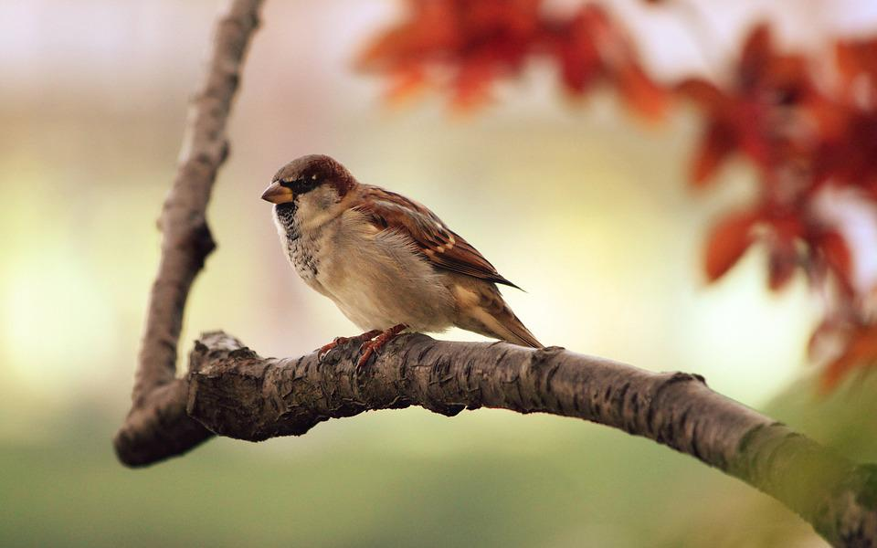
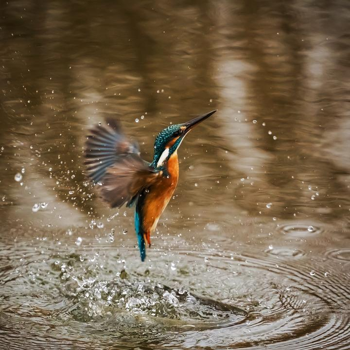
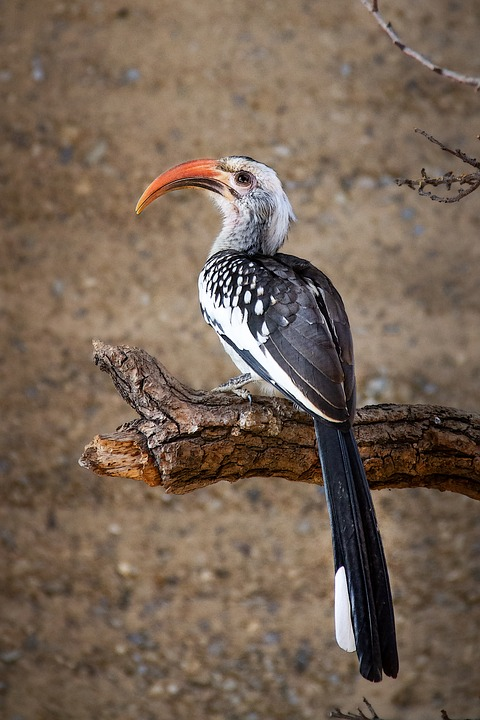

Diffrent types of birds and random facts

Sparrow is a species of birds that can be easily recognized because it lives very close to humans

Kingfishers are a group of small to medium-sized, brightly colored birds in the order Coraciiformes. There are roughly 90 different species of kingfisher in the world

Parrots are highly intelligent, fun-loving creatures that make wonderful pets. While most people are aware of the overall spunk and unique personality traits they possess

Hornbills are a family of bird.There are approximately 55 species of hornbills. Hornbills are found in tropical and subtropical Africa, Asia and Melanesia